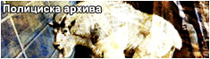
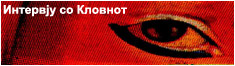
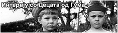

„Зад секоја маска стои месо, без разлика на тоа колку студ издишуваат нејзините ноздрви. И роговите, запамтете, никогаш не се вистински...“
Мудрите Јарци, 10 октомври 2003, Виена
Новите мутанти се стари, но тоа не значи дека треба да ги третирате поинаку. Тоа, се чини, е пораката на двата бели јарци од циркусот „Допелгангер“ чие исчезнување во Скопје беше пропратено со бурна медиумска реакција пред неколку месеци. Ако сеќавањето ве издава и не можете да се сетите на целата афера, нека не ве чуди – популарните скопски ТВ и радио станици се нафрлија на случајот бескрвно, единствено затоа што во тој период не ни имаше за што друго да се известува. Ирак и дневната политика беа стари и здодевни, а резултатите околу кандидатурата за ЕУ беа само запирка во нечиј заб. Следствено, во сите тие вести никој, а особено не ТВ водителите, не им обрна внимание на јарците, а клучното прашање остана неодговорено: кои се јарците и зошто се толку значајни?
НМП се обиде да ви ги претстави учесниците во случајот како и серијата настани што водеа до исчезнувањето на двата главни актери, но заради наводен „временски“ конфликт, објавувањето на нивниот Журнал се досега беше одлагано. Сепак, во следните месец дена (односно, како што се комплетираат материјалите), Журналот постепено ќе биде објавуван, а како увертира ви ја презентираме оваа „Археологија на јарештвото“ составена од Ивица Дукоски, Слободан Јаќоски и Невидливиот Човек кој ги интервјуираше Кловнот и Децата од Гума. Со ова, се надеваме, и конечно ќе биде ставен крај на оваа медиумска шарада и дека јарците конечно ќе бидат најдени.


